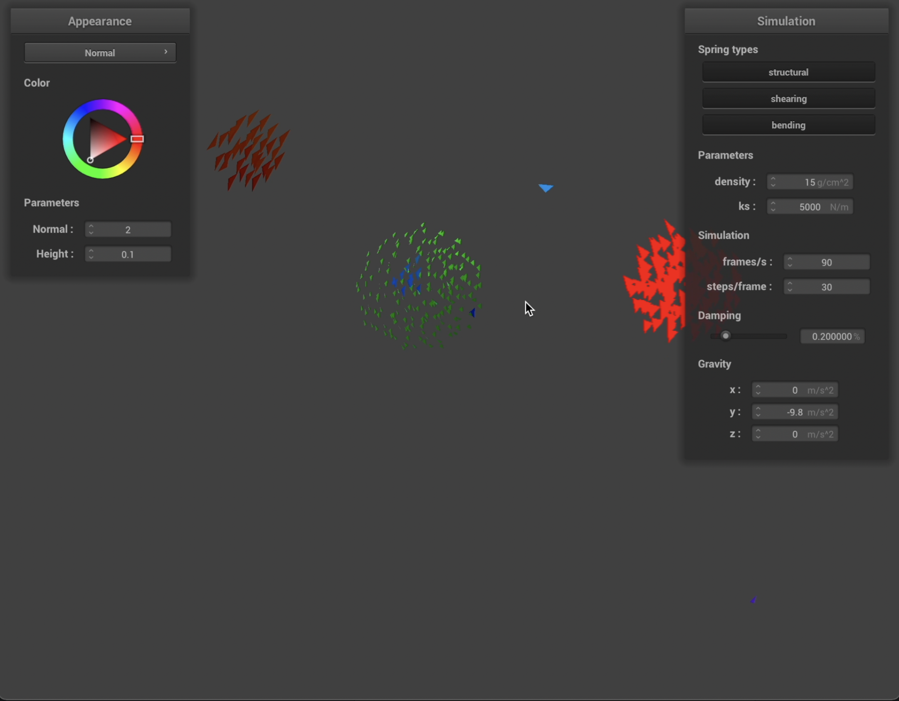
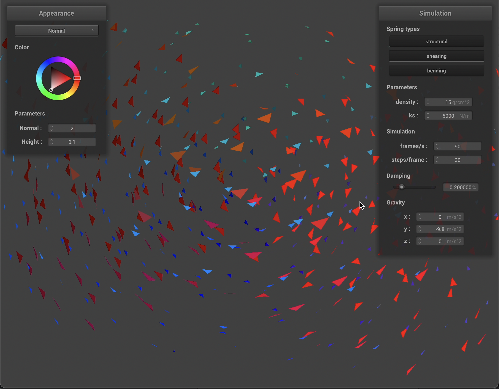
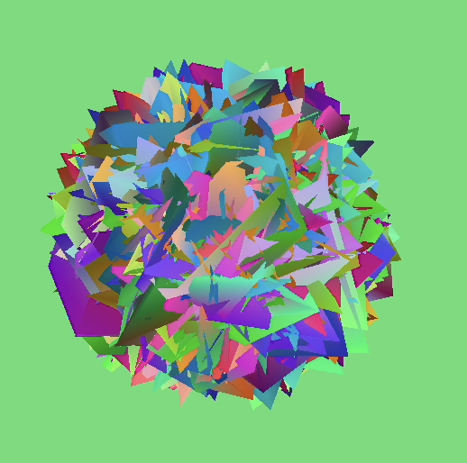
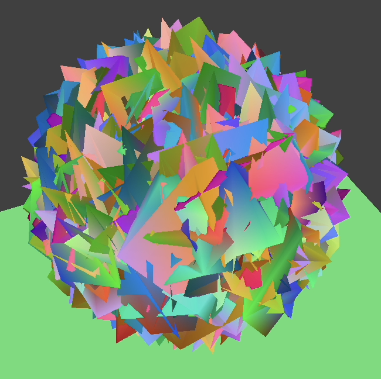
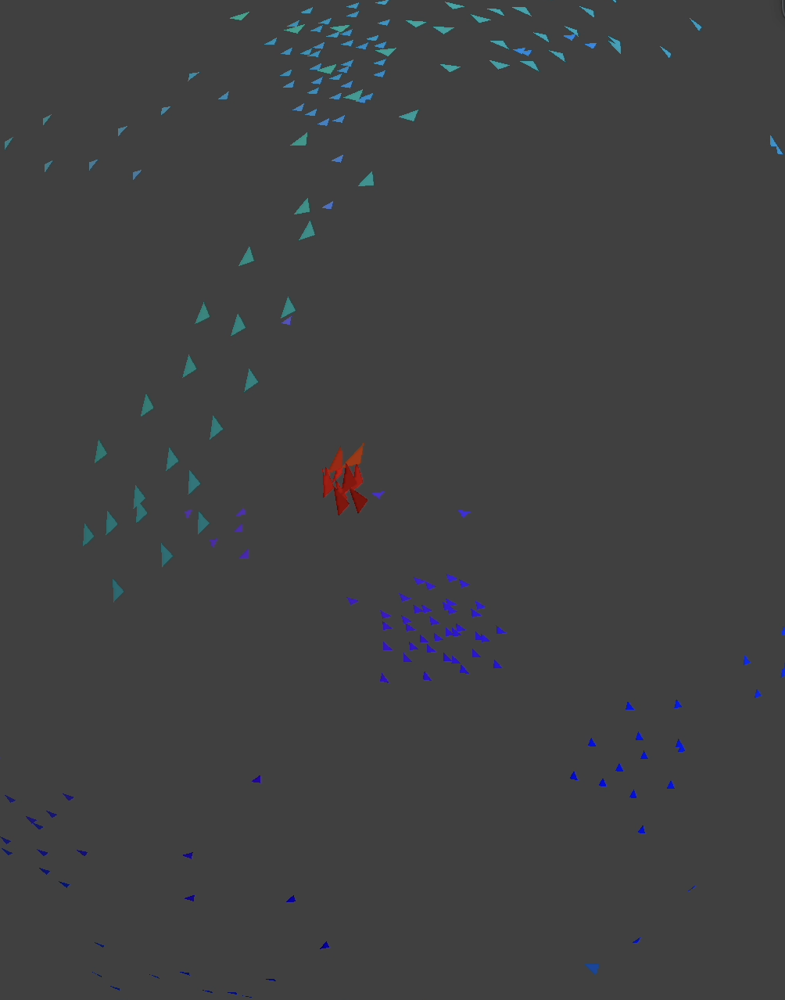

We started our project from the starter code of project 4, as it has a good framework for the visualizations we are planning to implement. So far we have created the framework for the particle simulation and their interactions. Currently we have coded only simple attraction and repulsion interactions, but have added the ability for multiple particle types to interact in different ways.
|

The "stable" state of a three-particle system
|

The "stable" state of a mock proton/neutron simulation
|
We have not implemented marching cubes, so for visualization we started with using the default cloth linking for appearance. This worked on some level, but for more clarity we replaced this by rendering a triangle for each particle. We use normal shading and orient them to have their normal pointing outward from the centroid of all particles to provide a surface appearance. In week 2 we will implement marching cubes and no longer use this temporary solution.
Example Simulations
In terms of simulations we have run several variations on the premise of gravitational attraction and repulsion, with physics computed by verlet integration.
- For the first simulation we set only the attraction force to be present. We did this with the idea that the particles would collapse into a small sphere and sit at rest. WIthout particle collision, however, when they got close they would accelerate each other to infinity. While we plan to add collisions, for now we stop computing force when particles are close to each other. This produced the results we expected, with the particles all collapsing until they found a stable equilibrium where they were all within the force exclusion radius of every other particle.
- We then added the repulsive force to the mix, and we ran the simulation starting from a block of particles. The box compressed and sloshed around balancing between the fact that the repulsive force is stronger when close, but the attractive force is stronger when far.
- Finally we ran a few multiclass simulations, where 2 or more different classes of particles were present. The particles were attracted to like particles, and repelled by the opposite.
|

Only attraction forces
|

Added repulsion forces (sphere is larger)
|

Two particle system
|
We are on schedule after 1 week, having finished the particle simulation. There are a few more particle interactions we plan to add, but they will be added as needed during our work on the other parts of this project. So the only update to the plan is continued particle sim updates alongside our other work.